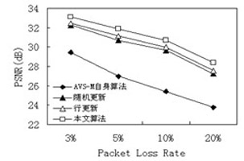
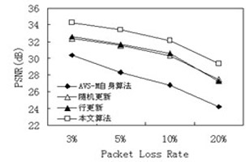
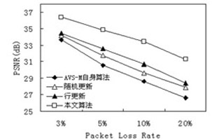
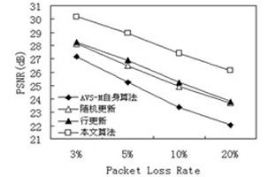
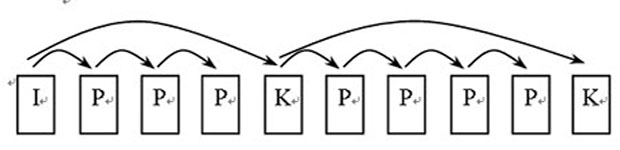
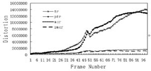
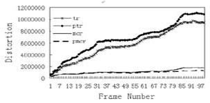
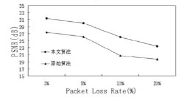
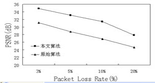

AVS-M帧内更新和关键帧选择技术
AVS-M编码标准同H.264/AVC、MPEG等一样都是采用基于运动估计和补偿的时域预测技术来提高编码效率，在信道发生错误的情况下容易产生误码扩散现象，从而导致重建视频质量的严重下降。
-
无损率失真优化和有损率失真优化模型
率失真优化就是指在带宽受限条件下动态调整编码模式和量化步长使得总失真最小。无损率失真优化是指在视频传输没有差错时，编码器在码率受限条件下的最小化量化引起的量化失真。
当视频传输存在差错时，率失真优化需要在码率受限条件下最小化量化引起的量化失真和视频差错导致的传输失真，即有损率失真优化。帧内更新技术


"Carphone@QCIF"序列在128kbps时
不同帧内更新算法比较"Suzie@QCIF"序列在128kbps时
不同帧内更新算法比较

"News@CIF" 序列在 256kbps 时
不同帧内更新算法比较"Paris@CIF" 序列在 384kbps 时
不同帧内更新算法比较AVS-M 自身算法 随机更新算法 行更新算法 基于有损率失真帧内更新优化算法
-
关键参考帧技术

无反馈关键参考帧选择编码示意图 

Suzie 序列在 p =10% 时的失真度比较 Carphone 序列在 p =10% 时的失真度比较 

“Foreman” 序列 128kbps 时不同算法比较 “Suzie” 序列 128kbps 时不同算法比较 “Suzie” 序列第 68 帧原始算法主观图像 “Suzie” 序列第 68 帧改进算法主观图像 ↑